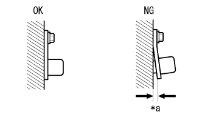
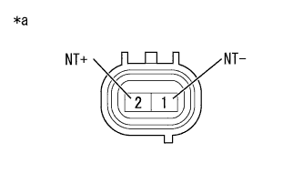

DTC P0717/37 回転数センサ系統 |
| DTC No. SAE/TCCS |
| 点検部位 |
|---|---|---|
| P0717/37 |
|
|

| 手順1 | 取り付け状態点検（トランスミッションレボリューションセンサ(NT)） |
|  |
トランスミッションレボリューションセンサ(NT)の取り付け状態を確認する。
| *a | すき間 |
|
| ||||
| OK | |
| 手順2 | トランスミッション レボリューション センサ（NT）単体点検 |
トランスミッションレボリューションセンサ(NT)のコネクターB8を切り離す。
|  |
SST(トヨタエレクトリカルテスター)を使用して、端子間の抵抗を測定する。
| 点検端子 | 点検条件 | 基準値 |
|---|---|---|
| 1 (NT-) - 2 (NT+) | 20°C | 560 to 680Ω |
| *a | コネクター非接続状態 (トランスミッションレボリューションセンサ(NT)) |
|
| ||||
| OK | |
| 手順3 | ワイヤハーネスおよびコネクター点検（トランスミッションレボリューションセンサ(NT) - エンジンコントロールコンピュータ） |
参照。エンジンコントロールコンピュータのコネクターB37を切り離す。
 |
SST(トヨタエレクトリカルテスター)を使用して、端子間の抵抗を測定する。
| 点検端子 | 点検条件 | 基準値 |
|---|---|---|
| B37-27 (NT+) - B37-35 (NT-) | 20°C | 560 to 680Ω |
| 点検端子 | 点検条件 | 基準値 |
|---|---|---|
| B37-27 (NT+) - ボデーアース | 常時 | 10kΩ以上 |
| B37-35 (NT-) - ボデーアース | 常時 | 10kΩ以上 |
| *a | 車両ワイヤハーネスコネクター後側 (エンジンコントロールコンピュータ接続コネクター) |
|
| ||||
| OK | ||
| ||